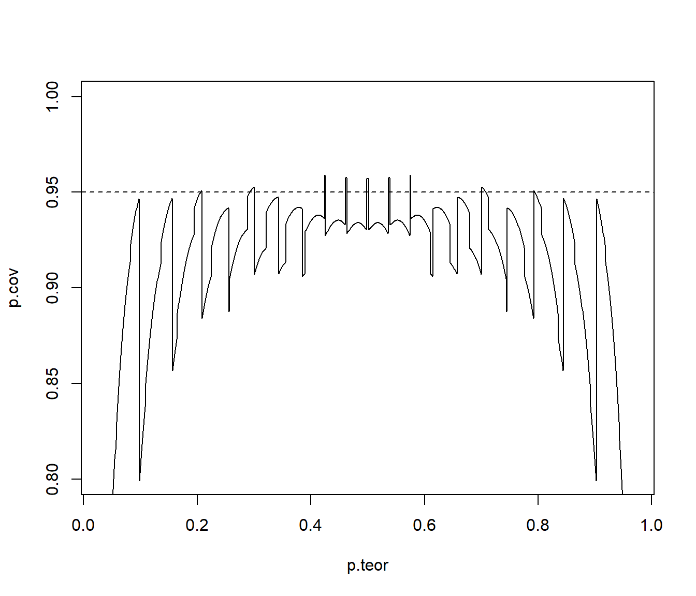
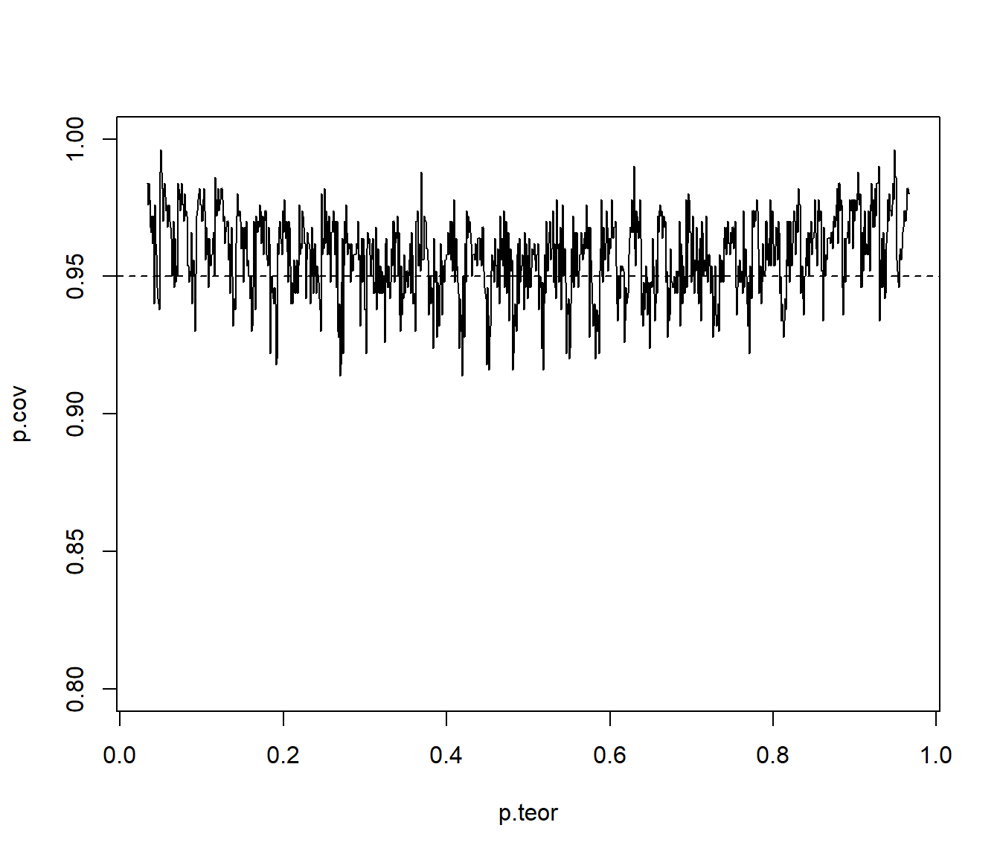

8.2 Intervalos de confianza
A partir del enunciado del Ejercicio 8.1, se deduce que el intervalo de confianza (de nivel \(1-\alpha\)) para la media \(\mu\) de una población normal con varianza conocida es: \[IC_{1-\alpha}\left( \mu\right) = \left( \overline{X}-z_{1-\alpha/2}\dfrac{\sigma}{\sqrt{n}},\ \overline{X} + z_{1-\alpha/2}\dfrac{\sigma}{\sqrt{n}} \right).\] La idea es que el \(100(1-\alpha)\%\) de los intervalos así construidos contentrán el verdadero valor del parámetro.
Utilizando el conjunto de datos
muestrasdel ejercicio 1 (500 muestras de tamaño \(n=10\) de una \(N(1,2)\)), añadir en dos nuevas variables los extremos del intervalo de confianza para la media con varianza conocida al conjunto de datos. Analizar la cobertura de estas estimaciones por IC.IC para la media con varianza conocida (bajo normalidad):
alfa <- 0.05 z <- qnorm(1 - alfa/2) muestras$ici <- muestras$mean - z*sdx/sqrt(nx) muestras$ics <- muestras$mean + z*sdx/sqrt(nx)Cobertura de las estimaciones por IC:
muestras$cob <- (muestras$ici < mux) & (mux < muestras$ics) ncob <- sum(muestras$cob) # Nº de intervalos que contienen la verdadera media ncob## [1] 480100*ncob/nsim # Proporción de intervalos## [1] 96100*(1 - alfa) # Proporción teórica bajo normalidad## [1] 95Como ejemplo ilustrativo, generamos el gráfico de los primeros 50 intervalos:
m <- 50 tmp <- muestras[1:m,] attach(tmp) color <- ifelse(cob,"blue","red") plot(1:m, mean, col = color, ylim = c(min(ici),max(ics)), xlab = "Muestra", ylab = "IC") arrows(1:m, ici, 1:m, ics, angle = 90, length = 0.05, code = 3, col = color) abline(h = mux, lty = 3)
Figura 8.3: Cobertura de las estimaciones por IC.
detach(tmp)
Repetir el apartado anterior considerando muestras de una \(Exp(1)\). ¿Qué ocurre con la cobertura del intervalo de confianza obtenido bajo normalidad?
Ejecutar el código del apartado a) del ejercicio 2.
IC para la media con varianza conocida (bajo normalidad)
alfa <- 0.05 z <- qnorm(1 - alfa/2) muestras2$ici <- muestras2$mean - z*sdexp/sqrt(nx) muestras2$ics <- muestras2$mean + z*sdexp/sqrt(nx)Cobertura de las estimaciones por IC:
muestras2$cob <- (muestras2$ici < muexp) & (muexp < muestras2$ics) ncob <- sum(muestras2$cob) # Nº de intervalos que contienen la verdadera media ncob## [1] 469100*ncob/nsim # Proporción de intervalos## [1] 93.8100*(1 - alfa) # Proporción teórica bajo normalidad## [1] 95Como ejemplo ilustrativo, generamos el gráfico de los primeros 100 intervalos:
m <- 100 tmp <- muestras2[1:m,] attach(tmp) color <- ifelse(cob,"blue","red") plot(1:m, mean, col = color, ylim = c(min(ici),max(ics)), xlab = "Muestra", ylab = "IC") arrows(1:m, ici, 1:m, ics, angle = 90, length = 0.05, code = 3, col = color) abline(h = muexp, lty = 3)
Figura 8.4: Cobertura de las estimaciones por IC (bajo normalidad).
detach(tmp)¿Qué ocurre si aumentamos el tamaño muestral a 50?
Ejecutar el código del ejercicio anterior fijando
nx <- 50y el del apartado anterior.
En los apartados b) y c) podíamos considerar bootstrap descrito al final de este capítulo.
Podemos aproximar por simulación los intervalos de probabilidad de la media muestral (tendríamos una idea del valor esperado de lo que obtendríamos con el bootstrap percentil; en este caso el estimador es insesgado…):
# Distribución de la media muestral
hist(muestras2$mean, freq=FALSE, breaks="FD",
main="Distribución de la media muestral", xlab="Medias", ylab="Densidad")
# Densidad observada (estimación)
lines(density(muestras2$mean), lwd=2, col='red')
# Densidad teórica (bajo normalidad)
curve(dnorm(x,muexp,sdexp/sqrt(nx)), col="blue", add=TRUE)
# Aproximación por simulación del valor esperado de la media muestral
abline(v=mean(muestras2$mean), lty=2)
# Valor esperado de la media muestral (teórico)
abline(v=muexp, col="blue")
# IP bajo normalidad
ic.aprox <- apply(muestras2[ ,c('ici','ics')], 2, mean)
## ic.aprox
## ici ics
## 0.3865199 1.6261099
# Intervalo de probabilidad para la media muestral aproximado bajo normalidad
abline(v = ic.aprox, col='blue')
# Intervalo de probabilidad para la media muestral (aproximado por simulación)
ic.sim <- quantile(muestras2$mean, c(alfa/2, 1 - alfa/2))
## ic.sim
## 2.5% 97.5%
## 0.4714233 1.8059094
# IP (aprox.)
abline(v=ic.sim, lty=2, col='red') 
t.test.
El Intervalo de confianza para una proporción construido usando la aproximación normal tiene un mal comportamiento cuando el tamaño de la muestra es pequeño. Una simple y efectiva mejora consiste en añadir a la muestra \(2a\) elementos, \(a\) exitos y \(a\) fracasos. Así el intervalo de confianza al \(\left( 1-\alpha\right) 100\%\) para una proporción mejorado es: \[\begin{aligned} IC_{1-\alpha}^{a}\left( p\right) & =\left( \tilde{p}-z_{1-\alpha/2}\sqrt{\frac{\tilde{p}(1-\tilde{p})}{\tilde{n}}} \text{ , } \tilde{p}+z_{1-\alpha/2}\sqrt{\frac{\tilde{p}(1-\tilde{p})}{\tilde{n}}}\right) ,\\ \text{siendo }\tilde{n} & = n+2a \text{, } \tilde{p} = \frac{np+a}{\tilde{n}}. \end{aligned}\] En el caso de \(a=2\) se denomina IC Agresti-Coull.
Teniendo en cuenta que la variable aleatoria \(X=n\hat{p}\sim\mathcal{B}(n,p)\), obtener y representar gráficamente la cobertura teórica del intervalo de confianza estándar (\(a=0\)) de una proporción para una muestra de tamaño \(n=30\), \(\alpha=0.05\) y distintos valores de \(p\) (
p.teor <- seq(1/n, 1 - 1/n, length = 1000)).Parámetros:
n <- 30 alpha <- 0.05 adj <- 0 # (adj <- 2 para Agresti-Coull)Probabilidades teóricas:
m <- 1000 p.teor <- seq(1/n, 1 - 1/n, length = m)Posibles resultados:
x <- 0:n p.est <- (x + adj)/(n + 2 * adj) ic.err <- qnorm(1 - alpha/2) * sqrt(p.est * (1 - p.est)/(n + 2 * adj)) lcl <- p.est - ic.err ucl <- p.est + ic.errRecorrer prob. teóricas:
p.cov <- numeric(m) for (i in 1:m) { # cobertura de los posibles intervalos cover <- (p.teor[i] >= lcl) & (p.teor[i] <= ucl) # prob. de los posibles intervalos p.rel <- dbinom(x[cover], n, p.teor[i]) # prob. total de cobertura p.cov[i] <- sum(p.rel) }Gráfico coberturas:
plot(p.teor, p.cov, type = "l", ylim = c(1 - 4 * alpha, 1)) abline(h = 1 - alpha, lty = 2)
Fuente Suess y Trumbo (2010).
Repetir el apartado anterior considerando intervalos de confianza Agresti-Coull (\(a=2\)).
Parámetros:
n <- 30 alpha <- 0.05 adj <- 2 # Agresti-Coull # Probabilidades teóricas: m <- 1000 p.teor <- seq(1/n, 1 - 1/n, length = m) # Posibles resultados: x <- 0:n p.est <- (x + adj)/(n + 2 * adj) ic.err <- qnorm(1 - alpha/2) * sqrt(p.est * (1 - p.est)/(n + 2 * adj)) lcl <- p.est - ic.err ucl <- p.est + ic.err # Recorrer prob. teóricas: p.cov <- numeric(m) for (i in 1:m) { # cobertura de los posibles intervalos cover <- (p.teor[i] >= lcl) & (p.teor[i] <= ucl) # prob. de los posibles intervalos p.rel <- dbinom(x[cover], n, p.teor[i]) # prob. total de cobertura p.cov[i] <- sum(p.rel) } # Gráfico coberturas: plot(p.teor, p.cov, type = "l", ylim = c(1 - 4 * alpha, 1)) abline(h = 1 - alpha, lty = 2)
Repetir el apartado anterior empleando simulación para aproximar la cobertura.
Parámetros:
n <- 30 alpha <- 0.05 adj <- 2 #' (2 para Agresti-Coull) set.seed(54321) nsim <- 500 # Probabilidades teóricas: m <- 1000 p.teor <- seq(1/n, 1 - 1/n, length = m)Recorrer prob. teóricas:
# m <- length(p.teor) p.cov <- numeric(m) for (i in 1:m) { # Equivalente a simular nsim muestras de tamaño n # ry <- matrix(rbinom(n*nsim, 1, p.teor[i]), ncol=n) # rx <- apply(ry, 1, sum) rx <- rbinom(nsim, n, p.teor[i]) p.est <- (rx + adj)/(n + 2 * adj) ic.err <- qnorm(1 - alpha/2) * sqrt(p.est * (1 - p.est)/(n + 2 * adj)) p.cov[i] <- mean( abs(p.est - p.teor[i]) < ic.err ) }Representar:
plot(p.teor, p.cov, type = "l", ylim = c(1 - 4 * alpha, 1)) abline(h = 1 - alpha, lty = 2)
Como ya se comentó, el caso de ajustar un modelo a los datos y realizar simulaciones a partir de ese modelo ajustado para aproximar las características de interés de un estadístico, se denomina también bootstrap paramétrico. Para más detalles ver por ejemplo la Sección 3.1 de Cao y Fernández-Casal (2020). En este libro, en las secciones 4.6.2 y B.3.2, se incluyen ejemplos adicionales de estudios de simulación.